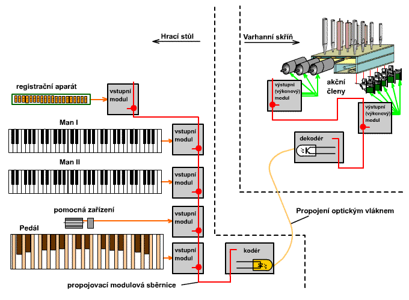

Nositelem pohybu v mechanické traktuøe jsou mechanické souèástky – páky, høídele, abstrakty atd, v pneumatické traktuøe je to stlaèený vzduch. V elektrické (nìkdy taky nazývané elektromagnetické nebo elektrodynamické) traktuøe je to elektrický proud. Klávesa èi jiný ovládací prvek na hracím stole zpùsobí uzavøení odpovídajícího elektrického obvodu od zdroje k pøíslušnému akènímu prvku (ventilu ve vzdušnici, zásuvce…). Vlastní elektrické obvody varhan jsou sestaveny z prvkù, popsaných na samostatné stránce. Funkce elektrické traktury využívá elektromagnetického jevu, na jehož základì pracují elektromagnety, tvoøící základní výkonný prvek této traktury. Prùchod proudu vinutím cívky zpùsobí pøitažení (nebo vtažení – podle konkrétní konstrukce a funkce) kotvy, která vykoná mechanickou práci (ovládá ventil, pøesouvá zásuvky apod.). První pokusy s využitím elektøiny ve varhanách se datují nìkde do poslední tøetiny 19. století, funkèní nástroj pøedstavil roku 1871 stuttgartský varhanáø Wiegel na výstavì ve Vídni. Širšího využití se však tento typ traktury doèkal až v období po druhé svìtové válce. Využití elektrické traktury ve varhanách umožòuje stavbu rozlehlých a složitých nástrojù, od nichž mùže být hrací stùl vzdálen více, než u jiných typù traktur. Hrací stùl je s nástrojen propojen kabelem (dnes èasto optickým nebo dokonce bezdrátovì), lze tedy èásteènì i mìnit jeho polohu (pohyblivý stùl). Je možné i pøipojení více hracích stolù k jednomu nástroji nebo naopak ovládání více nástrojù z jednoho místa: |

Na obrázku je zjednodušené blokové schéma soudobého nástroje s elektrickou trakturou. V hracím stole je øada vstupních modulù, které jsou navzájem propojeny pomocí sbìrnice (elektrických vodièù nebo optických vláken, po kterých se velkou rychlostí šíøí signály nesoucí nìjakou informaci). Tyto moduly pøevádìjí signály o stavu ovládacích (øídicích) prvkù hracího stolu (kláves, sklopek, válce atd.) na informace pro kodér. Kodér pøevede tyto informace na sériový èíslicový kód, který se nejèastìji opticky po sklenìném vláknu (nebo elektricky po tenkém kabelu èi bezdrátovì pomocí rádiového signálu) pøenese od stolu do skøínì nástroje. Tam jej obdobné zaøízení s opaènou funkcí - dekodér pøevede zpátky na pøíslušné informace a pøes výkonové moduly posílá elektrické impulsy na odpovídající akèní èleny (tónové a rejstøíkové magnety, servomotory apod.). Nìkteré konstrukce nepoužívají modulovou koncepci, pak jdou signály od øídicích èlenù pøímo do kodéru (øídicí jednotky hracího stolu) a signály k akèním èlenùm vycházejí pøímo z výkonových výstupù dekodéru. Kodér i dekodér jsou zaøízení na bázi mikropoèítaèe, jejich èinnost proto lze i dodateènì ovlivnit úpravou programu bez zásahu do fyzického uspoøádání - zapojení hracího stolu. Pùvodní (starší) konstrukce elektrické traktury mìly elektrické propojení, realizované elektrickým vodièem (èi párem vodièù) mezi každým øídicím a akèním èlenem. Hrací stùl tak byl se skøíní nástroje propojen kabelem se stovkami žil (drátkù). Toto propojení bylo nároèné jak na výrobu, tak na údržbu (pøedevším u pohyblivých stolù tlustý kabel èasto znesnadòoval propojení pomocí konektoru a díky jeho mechanickému namáhání jej èinil nespolehlivým). |
Nástroje s elektrickou trakturou disponují vìtšinou znaèným poètem pomocných zaøízení (spojky, volné kombinace, transmise). Vìtšina z nich je vybudována jako souèást logiky hracího stolu a nemá tak vliv na stavbu a složitost samotného nástroje. Nástroj s elektrickou trakturou má nìkolik nevýhod. Hlavní z nich je závislost na zdroji elektrického proudu. Práci ventilátoru lze nahradit v pøípadì výpadku napájení manuálním plnìním mìchu prací kalkanta, traktura se ale bez proudu neobejde ani na chvíli. Musí být dodáván stále (možností je nìkolik – dynamo na høídeli ventilátoru, statický zdroj – transformátor s usmìròovaèem a nebo akumulátory). Mechanické èi pneumatické varhany tento problém neznají, k jejich èinnosti staèí stlaèený vzduch z mìchu. Po zvukové a umìlecké stránce jsou varhany s elektrickou trakturou charakteristické nulovým zpoždìním ozevu tónù a velmi rychlou repeticí. Hráèi je však tato traktura oznaèovaná jako „mrtvá“ – chybí u ní pocit spojení klávesy s ventilem a nelze tak prsty kontrolovat jeho otevírání (dnes se tomu u lepších varhan snaží varhanáøi èásteènì pomoci simulátorem mechanické traktury a proporcionálním øízením ventilù, jejich otevírání pak skuteènì sleduje dráhu pohybu klávesy). Dalším, ne nepodstatným problémem elektrické traktury (velmi èasto zdùrazòovaným jejími odpùrci) je rychlé morální zastarávání použitých komponentù. Zatímco životnost nástroje pøi poctivém zpracování a použití kvalitních materiálù se poèítá na staletí, fyzická životnost napø. registraèního poèítaèe èi klaviaturového kodéru se pohybuje okolo dvaceti let a morální nepøesáhne desetiletí). Po této dobì nutnì musí nastoupit výmìna (upgrade hardware i software) a pøípadné pøizpùsobení nových komponentù tìm, které zùstanou zachovány (vìtšinou akèní èleny, zdroje, vodièe). Opakovanými pøestavbami nástroj i jeho obsluha trpí a mnohdy se i pøes øadu nových vymožeností nové verze komponentù jeho umìlecká stránka zhoršuje. V souèasnosti stavìné varhany se proto vracejí zpìt k mechanické èi pneumatické traktuøe (pøedevším hrací, rejstøíková je èasto elektrická èi kombinovaná). Má na to vliv i podstatnì dokonalejší a propracovanìjší provedení jednotlivých komponentù a jejich lepší vlastnosti (ve srovnání se stavem techniky a dostupnými materiály pøed nìkolika desítkami èi stovkami let). Dìje se tak hlavnì díky lepším hudebním vlastnostem pneumatických a mechanických varhan. Elektrická traktura se pak u tìchto varhan používá spíše u druhého (vzdáleného èi pohyblivého) stolu. |
Na dalších stránkach jsou popsány komponenty elektrické traktury, tónová traktura, rejstøíková traktura a elektrické spojky. |
Poznámka: Tato stránka je souèástí Anatomie varhan ®, © Ing. Petr Bernat. Èást animací © Konrad Zacharski